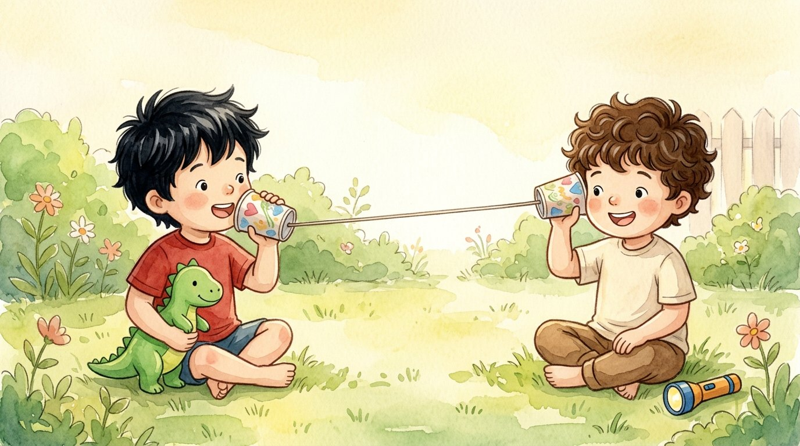

Primer grado · Ciencias · 1-PS4-4
El teléfono de vasos
Un cuento sobre cómo mandar mensajes con sonido y con luz.
Tres palabras nuevas
Lo que le quieres decir a alguien.
Un sonido o una luz que dice algo sin palabras.
Un cordón muy delgado.
Toca un dibujo para oír la palabra y qué significa.
El cuento
Adrián e Israel querían hablar de lejos sin gritar.
Hicieron un teléfono con dos vasos de papel y un hilo largo.
Adrián habló dentro de su vaso: —¿Me oyes, Israel?
Su voz hizo vibrar el hilo, y el sonido viajó hasta el otro vaso.
—¡Te oigo! —contestó Israel con el vaso en la oreja.
Pero cuando el hilo quedaba flojo, no se oía nada.
—¡Hay que estirar el hilo! —dijo Adrián.
Más tarde, ya de noche, inventaron otra señal.
Con una linterna: una luz quería decir «hola», y dos luces, «ven a jugar».
Israel vio dos luces en la ventana y corrió a jugar.
Adrián llevó su dinosaurio verde para que también jugara.
Con sonido o con luz podemos mandar un mensaje a alguien que está lejos.
Preguntas
Escucha la pregunta y toca el dibujo correcto.
-
Pregunta A. ¿Cómo llegó la voz de Adrián al otro vaso?
La voz hizo vibrar el hilo, y el sonido viajó por él.
-
Pregunta B. ¿Cuándo no se oía nada?
El hilo tiene que estar estirado para que viaje el sonido.
-
Pregunta C. ¿Qué querían decir dos luces con la linterna?
Una luz era «hola» y dos luces, «ven a jugar».